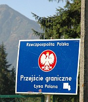

|

...mimo akcesji Polski i Słowacji do Unii Europejskiej
możliwe jest jedynie na przejściach granicznych (Łysa Polana,
Chochołów - Sucha Hora, Chyżne - Trsténa).
Obywatele Unii Europejskiej mogą przekraczać granicę
za okazaniem dowodu osobistego. Paszport nie jest już
niezbędny do przejścia przez granicę, natomiast może okazać się
potrzebny w kontaktach z oficjalnymi instytucjami (policja, służba
zdrowia, administracja państwowa) na Słowacji i w innych krajach UE.
Dlatego lepiej mieć go ze sobą. Na każdej granicy można mieć problem,
jeśli zdjęcie w dowodzie jest nieaktualne - wówczas paszport z
aktualniejszym z reguły zdjęciem znów się przydaje.
Granicę można przekraczać zarówno na podstawie starego, jak i nowego
dowodu. Dzieci do 16 roku życia muszą mieć własny paszport lub
być wpisane do paszportu rodziców. Wpis do starego "zielonego"
dowodu rodzica nie daje podstawy do przekroczenia granicy. Osoba niepełnoletnia
nie mająca dowodu osobistego może oczywiście przekroczyć granicę
na podstawie paszportu lub tymczasowego dowodu osobistego, jeśli go posiada.
Od kilku lat otwarte jest turystyczne przejście graniczne na
Rysach. Dzięki temu ci, którzy
posiadają doświadczenie górskie odpowiednie do pokonania trudnego szlaku
na Rysy (szczególnie od polskiej strony) i nie boją się
noszenia na plecach całego swojego dobytku i wchodzenia z nim
na wysokość 2499m, mogą oszczędzić czasu i środków, potrzebnych
na objeżdżanie całych Tatr dookoła i przedostawanie się przez ww.
przejścia drogowe oraz zaczynanie wędrówki od południowego podnóża gór.
Przejście turystyczne na Rysach otwarte
jest od 16 czerwca do 30 września.
Nie wolno przenosić przez nie alkoholu. Można korzystać z niego zarówno przy
opuszczaniu kraju, jak i przy powrocie, niezależnie od tego, przez które przejście
dostaliśmy się na Słowację lub zamierzamy z niej powrócić.
Od 1 maja 2004 obywatele Polski mogą przekraczać granicę na podstawie
dowodu osobistego (niepotrzebny jest paszport) - również na Rysach.
Innych poza Rysami i drogowymi przejściami
granicznymi miejsc granicy, takich jak Kasprowy
Wierch, Wołowiec, Grześ, nie wolno przekraczać.
|